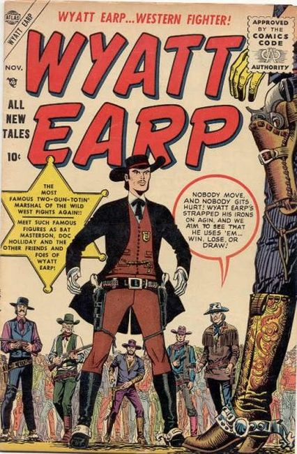

Series: 29 issues 1955 - 1960
Publisher: Atlas
Issue #1 Cover art by Joe Maneely
- The Making of a Marshall starrinig Wyatt Earp, art by Joe Maneely. Intro and origin of Wyatt.
- Where the Buffalo Roam starring Wyatt Earp, art by Joe Maneely.
- Range Reputation text story.
- Gun-Fighter, pencils by Bob Forgione, inks by Jack Abel.
- Wyatt Earp story with a rattlesnake, art by Joe Maneely.